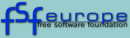

Zde text...
| FSF Evropa | FSF
|
GNU
|
GNU Španělsko |
| Francie | Něměcko |
|  |
| XHTML zdroj |
XSL stylesheet | Změny | webmaster@fsfeurope.org |
|
Copyright (C) 2001 FSF Europe Doslovné kopírování a distribuce tohoto dokumentu jsou povoleny na jakémkoliv médiu za předpokladu, že bude zachováno toto upozornění. |